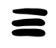
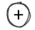

<nav>
    <ul>
        <li><button [routerLink]="['/vistacard']" routerLinkActive="router-link-active"  mat-flat-button><mat-icon aria-hidden="false" aria-label="Example home icon">home</mat-icon> Vista Card</button></li>
        <li><button [routerLink]="['/lista']" routerLinkActive="router-link-active"  mat-flat-button> Lista</button></li>
        <li><button [routerLink]="['/adicionar']" routerLinkActive="router-link-active"  mat-flat-button> Adicionar</button></li>
    </ul>

</nav>
